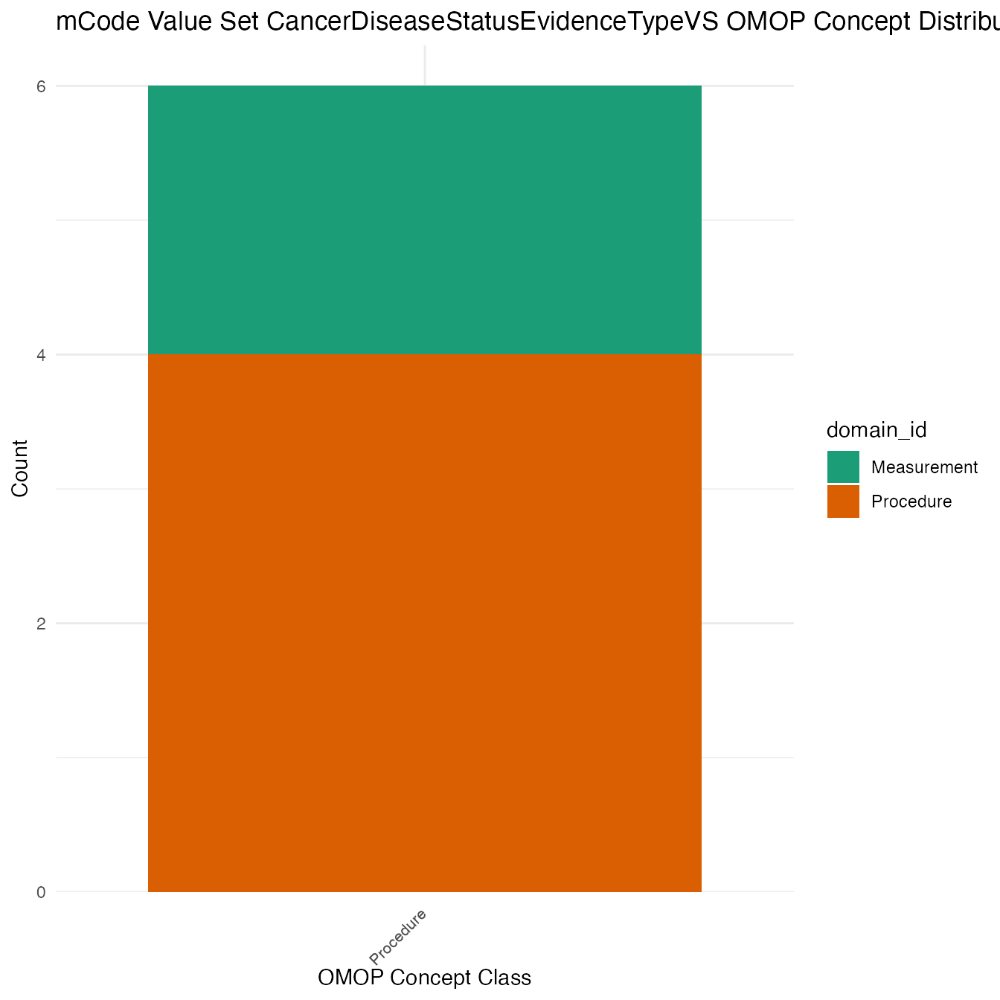
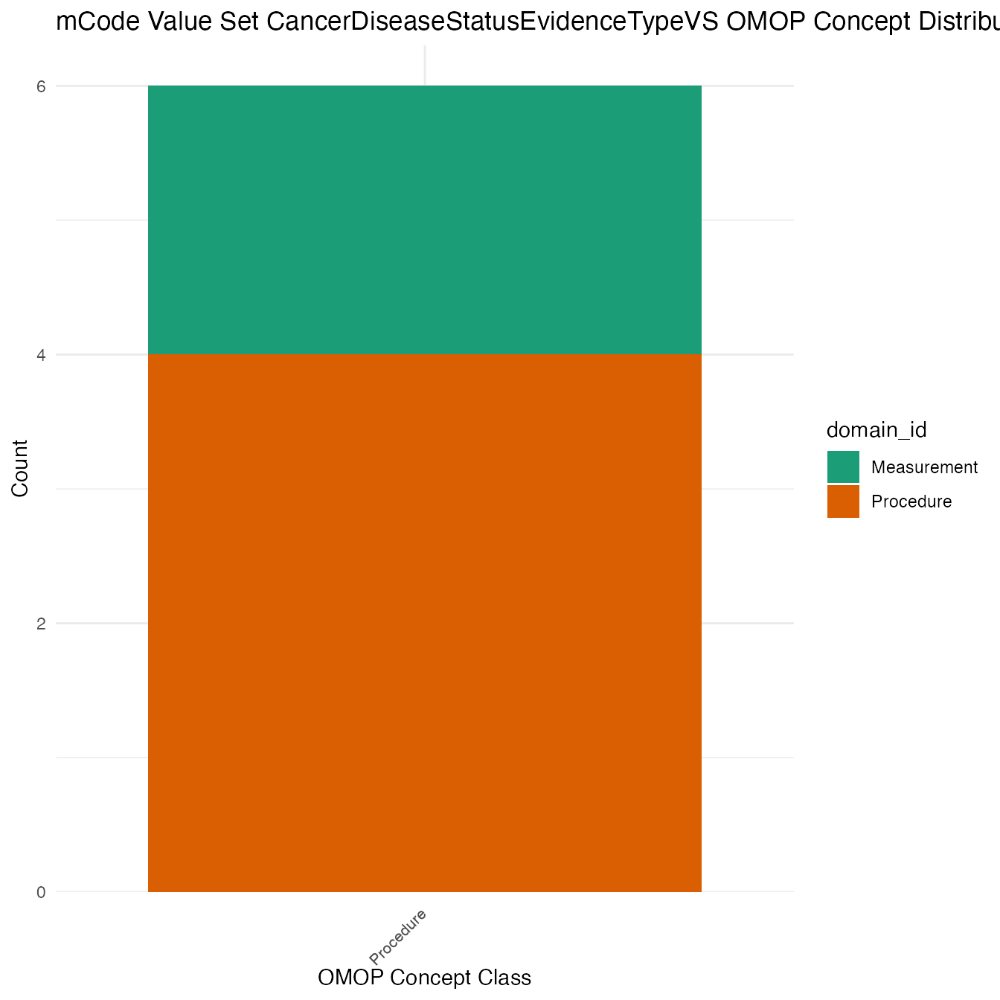
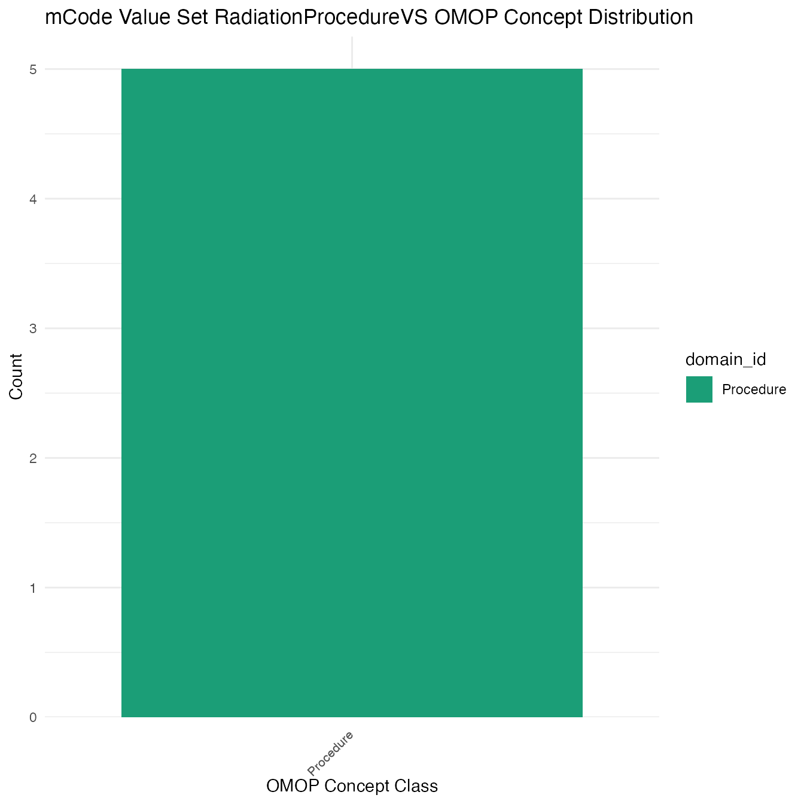
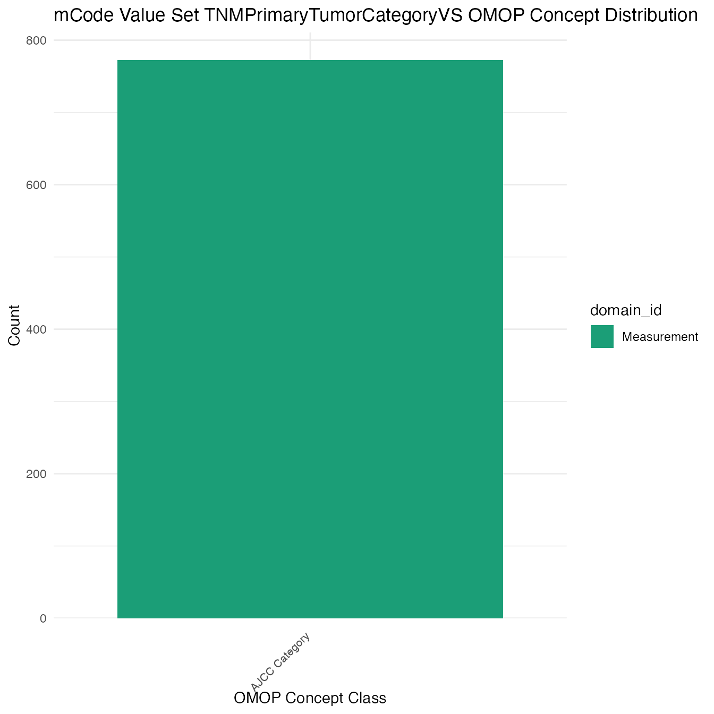
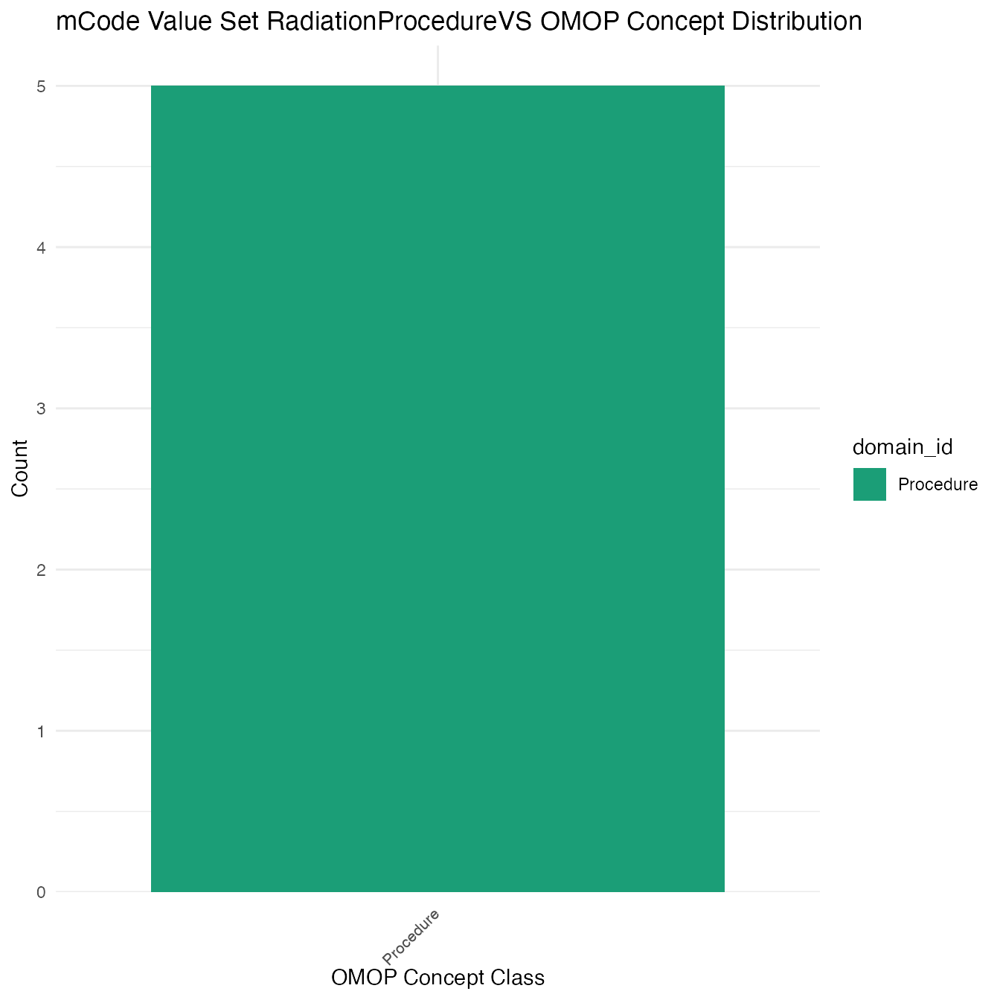
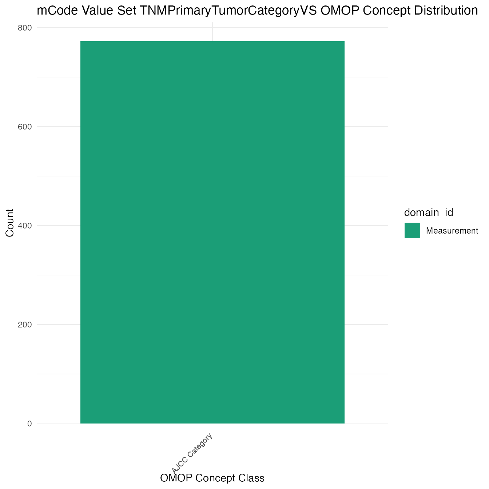

Last updated on: 2021-01-03
This vignette explores reconfiguring the mCode to OMOP Mappings.
## ── Attaching packages ─────────────────────────────────────── tidyverse 1.3.0 ──## ✓ ggplot2 3.3.3 ✓ purrr 0.3.4
## ✓ tibble 3.0.4 ✓ dplyr 1.0.2
## ✓ tidyr 1.1.2 ✓ stringr 1.4.0
## ✓ readr 1.4.0 ✓ forcats 0.5.0## ── Conflicts ────────────────────────────────────────── tidyverse_conflicts() ──
## x dplyr::filter() masks stats::filter()
## x dplyr::lag() masks stats::lag()Combining all the maps into a single map between all the value sets and mappings.
complete_map <- list(CANCER_STAGING, GENOMICS, ICD10CM, LOINC,
SNOMED, SPECIMEN, UNITS_OF_MEASUREMENT) %>% map(mutate_all,
as.character) %>% bind_rows()
complete_map## # A tibble: 215,272 x 26
## value_set_name code_system logical_definit… code code_description concept_id
## <chr> <chr> <chr> <chr> <chr> <chr>
## 1 TNMDistantMet… http://can… includes codes … <NA> <NA> 1537692
## 2 TNMDistantMet… http://can… includes codes … <NA> <NA> 1537780
## 3 TNMDistantMet… http://can… includes codes … <NA> <NA> 1537798
## 4 TNMDistantMet… http://can… includes codes … <NA> <NA> 1537804
## 5 TNMDistantMet… http://can… includes codes … <NA> <NA> 1537805
## 6 TNMDistantMet… http://can… includes codes … <NA> <NA> 1537808
## 7 TNMDistantMet… http://can… includes codes … <NA> <NA> 1537809
## 8 TNMDistantMet… http://can… includes codes … <NA> <NA> 1537821
## 9 TNMDistantMet… http://can… includes codes … <NA> <NA> 1537827
## 10 TNMDistantMet… http://can… includes codes … <NA> <NA> 1537830
## # … with 215,262 more rows, and 20 more variables: concept_name <chr>,
## # domain_id <chr>, vocabulary_id <chr>, concept_class_id <chr>,
## # standard_concept <chr>, concept_code <chr>, valid_start_date <chr>,
## # valid_end_date <chr>, invalid_reason <chr>, ancestors_of <chr>,
## # descendants_of <chr>, all_codes <chr>, Observation <chr>, Condition <chr>,
## # `Spec Anatomic Site` <chr>, Drug <chr>, `Meas Value` <chr>,
## # Measurement <chr>, Specimen <chr>, X14 <chr>Names of value sets:
## [1] "CancerBodyLocationVS"
## [2] "CancerDiseaseStatusEvidenceTypeVS"
## [3] "CancerDisorderVS"
## [4] "CancerRelatedSurgicalProcedureVS"
## [5] "CancerStagingSystemVS"
## [6] "ClinVarVS"
## [7] "ComorbidConditionVS"
## [8] "ConditionStatusTrendVS"
## [9] "GeneticSpecimenTypeVS"
## [10] "HGNCVS"
## [11] "HistologyMorphologyBehaviorVS"
## [12] "LateralityVS"
## [13] "PrimaryOrUncertainBehaviorCancerDisorderVS"
## [14] "RadiationProcedureVS"
## [15] "RadiationTargetBodySiteVS"
## [16] "SecondaryCancerDisorderVS"
## [17] "TNMDistantMetastasesCategoryVS"
## [18] "TNMPrimaryTumorCategoryVS"
## [19] "TNMRegionalNodesCategoryVS"
## [20] "TNMStageGroupVS"
## [21] "TreatmentIntentVS"
## [22] "TreatmentTerminationReasonVS"
## [23] "TumorMarkerTestVS"
## [24] "UnitsOfLengthVS"
## [25] "YesNoUnknownVS"OMOP Concept Distribution Plots
Each mCode value set’s OMOP mapping distribution is plotted for visual comparison of the way the concepts are represented in OMOP.
for (i in seq_along(value_sets)) {
df <- value_sets[[i]] %>% count(domain_id, vocabulary_id,
concept_class_id)
p <- ggplot2::ggplot(data = df, aes(x = reorder(concept_class_id,
-n), y = n, fill = domain_id)) + ggplot2::geom_bar(stat = "identity") +
ggplot2::theme_minimal() + ggplot2::scale_y_continuous(expand = expansion(mult = c(0,
0.05))) + ggplot2::labs(title = sprintf("mCode Value Set %s OMOP Concept Distribution",
names(value_sets)[i]), x = "OMOP Concept Class", y = "Count") +
ggplot2::scale_fill_brewer(palette = "Dark2") + ggplot2::theme(axis.text.x = element_text(angle = 45,
hjust = 1.1, size = 8))
print(p)
} 


 

Valueset Data
value_sets## $CancerBodyLocationVS
## # A tibble: 42,022 x 26
## value_set_name code_system logical_definit… code code_description concept_id
## <chr> <chr> <chr> <chr> <chr> <chr>
## 1 CancerBodyLoc… SNOMED CT includes codes … <NA> <NA> 4048384
## 2 CancerBodyLoc… SNOMED CT includes codes … <NA> <NA> 4002852
## 3 CancerBodyLoc… SNOMED CT includes codes … <NA> <NA> 36717763
## 4 CancerBodyLoc… SNOMED CT includes codes … <NA> <NA> 4230944
## 5 CancerBodyLoc… SNOMED CT includes codes … <NA> <NA> 42605189
## 6 CancerBodyLoc… SNOMED CT includes codes … <NA> <NA> 4097829
## 7 CancerBodyLoc… SNOMED CT includes codes … <NA> <NA> 4265989
## 8 CancerBodyLoc… SNOMED CT includes codes … <NA> <NA> 4143459
## 9 CancerBodyLoc… SNOMED CT includes codes … <NA> <NA> 4093877
## 10 CancerBodyLoc… SNOMED CT includes codes … <NA> <NA> 4300995
## # … with 42,012 more rows, and 20 more variables: concept_name <chr>,
## # domain_id <chr>, vocabulary_id <chr>, concept_class_id <chr>,
## # standard_concept <chr>, concept_code <chr>, valid_start_date <chr>,
## # valid_end_date <chr>, invalid_reason <chr>, ancestors_of <chr>,
## # descendants_of <chr>, all_codes <chr>, Observation <chr>, Condition <chr>,
## # `Spec Anatomic Site` <chr>, Drug <chr>, `Meas Value` <chr>,
## # Measurement <chr>, Specimen <chr>, X14 <chr>
##
## $CancerDiseaseStatusEvidenceTypeVS
## # A tibble: 6 x 26
## value_set_name code_system logical_definit… code code_description concept_id
## <chr> <chr> <chr> <chr> <chr> <chr>
## 1 CancerDisease… SNOMED CT <NA> <NA> <NA> 4180938
## 2 CancerDisease… SNOMED CT <NA> <NA> <NA> 4098214
## 3 CancerDisease… SNOMED CT <NA> <NA> <NA> 46272623
## 4 CancerDisease… SNOMED CT <NA> <NA> <NA> 4240345
## 5 CancerDisease… SNOMED CT <NA> <NA> <NA> 4353605
## 6 CancerDisease… SNOMED CT <NA> <NA> <NA> 4303425
## # … with 20 more variables: concept_name <chr>, domain_id <chr>,
## # vocabulary_id <chr>, concept_class_id <chr>, standard_concept <chr>,
## # concept_code <chr>, valid_start_date <chr>, valid_end_date <chr>,
## # invalid_reason <chr>, ancestors_of <chr>, descendants_of <chr>,
## # all_codes <chr>, Observation <chr>, Condition <chr>, `Spec Anatomic
## # Site` <chr>, Drug <chr>, `Meas Value` <chr>, Measurement <chr>,
## # Specimen <chr>, X14 <chr>
##
## $CancerDisorderVS
## # A tibble: 58,222 x 26
## value_set_name code_system logical_definit… code code_description concept_id
## <chr> <chr> <chr> <chr> <chr> <chr>
## 1 CancerDisorde… ICD-10-CM <NA> C00.0 Malignant neopl… 35206047
## 2 CancerDisorde… ICD-10-CM <NA> C00.1 Malignant neopl… 35206048
## 3 CancerDisorde… ICD-10-CM <NA> C00.2 Malignant neopl… 35206049
## 4 CancerDisorde… ICD-10-CM <NA> C00.3 Malignant neopl… 35206050
## 5 CancerDisorde… ICD-10-CM <NA> C00.4 Malignant neopl… 35206051
## 6 CancerDisorde… ICD-10-CM <NA> C00.5 Malignant neopl… 35206052
## 7 CancerDisorde… ICD-10-CM <NA> C00.6 Malignant neopl… 35206053
## 8 CancerDisorde… ICD-10-CM <NA> C00.8 Malignant neopl… 35206054
## 9 CancerDisorde… ICD-10-CM <NA> C00.9 Malignant neopl… 35206055
## 10 CancerDisorde… ICD-10-CM <NA> C01 Malignant neopl… 35206056
## # … with 58,212 more rows, and 20 more variables: concept_name <chr>,
## # domain_id <chr>, vocabulary_id <chr>, concept_class_id <chr>,
## # standard_concept <chr>, concept_code <chr>, valid_start_date <chr>,
## # valid_end_date <chr>, invalid_reason <chr>, ancestors_of <chr>,
## # descendants_of <chr>, all_codes <chr>, Observation <chr>, Condition <chr>,
## # `Spec Anatomic Site` <chr>, Drug <chr>, `Meas Value` <chr>,
## # Measurement <chr>, Specimen <chr>, X14 <chr>
##
## $CancerRelatedSurgicalProcedureVS
## # A tibble: 163 x 26
## value_set_name code_system logical_definit… code code_description concept_id
## <chr> <chr> <chr> <chr> <chr> <chr>
## 1 CancerRelated… SNOMED CT <NA> <NA> <NA> 4067441
## 2 CancerRelated… SNOMED CT <NA> <NA> <NA> 4171194
## 3 CancerRelated… SNOMED CT <NA> <NA> <NA> 4002559
## 4 CancerRelated… SNOMED CT <NA> <NA> <NA> 4087575
## 5 CancerRelated… SNOMED CT <NA> <NA> <NA> 4170198
## 6 CancerRelated… SNOMED CT <NA> <NA> <NA> 4029571
## 7 CancerRelated… SNOMED CT <NA> <NA> <NA> 4010266
## 8 CancerRelated… SNOMED CT <NA> <NA> <NA> 4270496
## 9 CancerRelated… SNOMED CT <NA> <NA> <NA> 4273866
## 10 CancerRelated… SNOMED CT <NA> <NA> <NA> 4119922
## # … with 153 more rows, and 20 more variables: concept_name <chr>,
## # domain_id <chr>, vocabulary_id <chr>, concept_class_id <chr>,
## # standard_concept <chr>, concept_code <chr>, valid_start_date <chr>,
## # valid_end_date <chr>, invalid_reason <chr>, ancestors_of <chr>,
## # descendants_of <chr>, all_codes <chr>, Observation <chr>, Condition <chr>,
## # `Spec Anatomic Site` <chr>, Drug <chr>, `Meas Value` <chr>,
## # Measurement <chr>, Specimen <chr>, X14 <chr>
##
## $CancerStagingSystemVS
## # A tibble: 3 x 26
## value_set_name code_system logical_definit… code code_description concept_id
## <chr> <chr> <chr> <chr> <chr> <chr>
## 1 CancerStaging… SNOMED CT <NA> <NA> <NA> 40485522
## 2 CancerStaging… SNOMED CT <NA> <NA> <NA> 40483646
## 3 CancerStaging… SNOMED CT <NA> <NA> <NA> 4123019
## # … with 20 more variables: concept_name <chr>, domain_id <chr>,
## # vocabulary_id <chr>, concept_class_id <chr>, standard_concept <chr>,
## # concept_code <chr>, valid_start_date <chr>, valid_end_date <chr>,
## # invalid_reason <chr>, ancestors_of <chr>, descendants_of <chr>,
## # all_codes <chr>, Observation <chr>, Condition <chr>, `Spec Anatomic
## # Site` <chr>, Drug <chr>, `Meas Value` <chr>, Measurement <chr>,
## # Specimen <chr>, X14 <chr>
##
## $ClinVarVS
## # A tibble: 7,735 x 26
## value_set_name code_system logical_definit… code code_description concept_id
## <chr> <chr> <chr> <chr> <chr> <chr>
## 1 ClinVarVS ClinVar Includes codes … <NA> <NA> 35968119
## 2 ClinVarVS ClinVar Includes codes … <NA> <NA> 35968121
## 3 ClinVarVS ClinVar Includes codes … <NA> <NA> 35968122
## 4 ClinVarVS ClinVar Includes codes … <NA> <NA> 35968123
## 5 ClinVarVS ClinVar Includes codes … <NA> <NA> 35968124
## 6 ClinVarVS ClinVar Includes codes … <NA> <NA> 35968125
## 7 ClinVarVS ClinVar Includes codes … <NA> <NA> 35968127
## 8 ClinVarVS ClinVar Includes codes … <NA> <NA> 35968128
## 9 ClinVarVS ClinVar Includes codes … <NA> <NA> 35968129
## 10 ClinVarVS ClinVar Includes codes … <NA> <NA> 35968130
## # … with 7,725 more rows, and 20 more variables: concept_name <chr>,
## # domain_id <chr>, vocabulary_id <chr>, concept_class_id <chr>,
## # standard_concept <chr>, concept_code <chr>, valid_start_date <chr>,
## # valid_end_date <chr>, invalid_reason <chr>, ancestors_of <chr>,
## # descendants_of <chr>, all_codes <chr>, Observation <chr>, Condition <chr>,
## # `Spec Anatomic Site` <chr>, Drug <chr>, `Meas Value` <chr>,
## # Measurement <chr>, Specimen <chr>, X14 <chr>
##
## $ComorbidConditionVS
## # A tibble: 22,874 x 26
## value_set_name code_system logical_definit… code code_description concept_id
## <chr> <chr> <chr> <chr> <chr> <chr>
## 1 ComorbidCondi… ICD-10-CM <NA> A52.… Syphilitic endo… 45537731
## 2 ComorbidCondi… ICD-10-CM <NA> B18.0 Chronic viral h… 35205769
## 3 ComorbidCondi… ICD-10-CM <NA> B18.1 Chronic viral h… 35205770
## 4 ComorbidCondi… ICD-10-CM <NA> B18.2 Chronic viral h… 35205771
## 5 ComorbidCondi… ICD-10-CM <NA> B20 Human immunodef… 35205776
## 6 ComorbidCondi… ICD-10-CM <NA> C00.0 Malignant neopl… 35206047
## 7 ComorbidCondi… ICD-10-CM <NA> C00.1 Malignant neopl… 35206048
## 8 ComorbidCondi… ICD-10-CM <NA> C00.2 Malignant neopl… 35206049
## 9 ComorbidCondi… ICD-10-CM <NA> C00.3 Malignant neopl… 35206050
## 10 ComorbidCondi… ICD-10-CM <NA> C00.4 Malignant neopl… 35206051
## # … with 22,864 more rows, and 20 more variables: concept_name <chr>,
## # domain_id <chr>, vocabulary_id <chr>, concept_class_id <chr>,
## # standard_concept <chr>, concept_code <chr>, valid_start_date <chr>,
## # valid_end_date <chr>, invalid_reason <chr>, ancestors_of <chr>,
## # descendants_of <chr>, all_codes <chr>, Observation <chr>, Condition <chr>,
## # `Spec Anatomic Site` <chr>, Drug <chr>, `Meas Value` <chr>,
## # Measurement <chr>, Specimen <chr>, X14 <chr>
##
## $ConditionStatusTrendVS
## # A tibble: 5 x 26
## value_set_name code_system logical_definit… code code_description concept_id
## <chr> <chr> <chr> <chr> <chr> <chr>
## 1 ConditionStat… SNOMED CT <NA> <NA> <NA> 9190
## 2 ConditionStat… SNOMED CT <NA> <NA> <NA> 4149524
## 3 ConditionStat… SNOMED CT <NA> <NA> <NA> 4234874
## 4 ConditionStat… SNOMED CT <NA> <NA> <NA> 4150631
## 5 ConditionStat… SNOMED CT <NA> <NA> <NA> 46271098
## # … with 20 more variables: concept_name <chr>, domain_id <chr>,
## # vocabulary_id <chr>, concept_class_id <chr>, standard_concept <chr>,
## # concept_code <chr>, valid_start_date <chr>, valid_end_date <chr>,
## # invalid_reason <chr>, ancestors_of <chr>, descendants_of <chr>,
## # all_codes <chr>, Observation <chr>, Condition <chr>, `Spec Anatomic
## # Site` <chr>, Drug <chr>, `Meas Value` <chr>, Measurement <chr>,
## # Specimen <chr>, X14 <chr>
##
## $GeneticSpecimenTypeVS
## # A tibble: 77 x 26
## value_set_name code_system logical_definit… code code_description concept_id
## <chr> <chr> <chr> <chr> <chr> <chr>
## 1 GeneticSpecim… http://ter… <NA> SKN Skin 1027716
## 2 GeneticSpecim… http://ter… <NA> PLC Placenta 1032268
## 3 GeneticSpecim… http://ter… <NA> SAL Saliva 1033195
## 4 GeneticSpecim… http://ter… <NA> SPT Sputum 1033465
## 5 GeneticSpecim… http://ter… <NA> WND Wound 1033739
## 6 GeneticSpecim… http://ter… <NA> BON Bone 1585831
## 7 GeneticSpecim… http://ter… <NA> SKN Skin 1585833
## 8 GeneticSpecim… http://ter… <NA> MAR Marrow 3310432
## 9 GeneticSpecim… http://ter… <NA> WND Wound 3311979
## 10 GeneticSpecim… http://ter… <NA> BLD Whole blood 3326584
## # … with 67 more rows, and 20 more variables: concept_name <chr>,
## # domain_id <chr>, vocabulary_id <chr>, concept_class_id <chr>,
## # standard_concept <chr>, concept_code <chr>, valid_start_date <chr>,
## # valid_end_date <chr>, invalid_reason <chr>, ancestors_of <chr>,
## # descendants_of <chr>, all_codes <chr>, Observation <chr>, Condition <chr>,
## # `Spec Anatomic Site` <chr>, Drug <chr>, `Meas Value` <chr>,
## # Measurement <chr>, Specimen <chr>, X14 <chr>
##
## $HGNCVS
## # A tibble: 19,297 x 26
## value_set_name code_system logical_definit… code code_description concept_id
## <chr> <chr> <chr> <chr> <chr> <chr>
## 1 HGNCVS http://www… All codes in ht… <NA> <NA> 35944910
## 2 HGNCVS http://www… All codes in ht… <NA> <NA> 35944911
## 3 HGNCVS http://www… All codes in ht… <NA> <NA> 35944912
## 4 HGNCVS http://www… All codes in ht… <NA> <NA> 35944913
## 5 HGNCVS http://www… All codes in ht… <NA> <NA> 35944914
## 6 HGNCVS http://www… All codes in ht… <NA> <NA> 35944916
## 7 HGNCVS http://www… All codes in ht… <NA> <NA> 35944917
## 8 HGNCVS http://www… All codes in ht… <NA> <NA> 35944920
## 9 HGNCVS http://www… All codes in ht… <NA> <NA> 35944921
## 10 HGNCVS http://www… All codes in ht… <NA> <NA> 35944922
## # … with 19,287 more rows, and 20 more variables: concept_name <chr>,
## # domain_id <chr>, vocabulary_id <chr>, concept_class_id <chr>,
## # standard_concept <chr>, concept_code <chr>, valid_start_date <chr>,
## # valid_end_date <chr>, invalid_reason <chr>, ancestors_of <chr>,
## # descendants_of <chr>, all_codes <chr>, Observation <chr>, Condition <chr>,
## # `Spec Anatomic Site` <chr>, Drug <chr>, `Meas Value` <chr>,
## # Measurement <chr>, Specimen <chr>, X14 <chr>
##
## $HistologyMorphologyBehaviorVS
## # A tibble: 1,325 x 26
## value_set_name code_system logical_definit… code code_description concept_id
## <chr> <chr> <chr> <chr> <chr> <chr>
## 1 HistologyMorp… SNOMED CT includes codes … <NA> <NA> 4264447
## 2 HistologyMorp… SNOMED CT includes codes … <NA> <NA> 4029663
## 3 HistologyMorp… SNOMED CT includes codes … <NA> <NA> 37311513
## 4 HistologyMorp… SNOMED CT includes codes … <NA> <NA> 36403182
## 5 HistologyMorp… SNOMED CT includes codes … <NA> <NA> 4030124
## 6 HistologyMorp… SNOMED CT includes codes … <NA> <NA> 4228267
## 7 HistologyMorp… SNOMED CT includes codes … <NA> <NA> 4029175
## 8 HistologyMorp… SNOMED CT includes codes … <NA> <NA> 4186244
## 9 HistologyMorp… SNOMED CT includes codes … <NA> <NA> 4267422
## 10 HistologyMorp… SNOMED CT includes codes … <NA> <NA> 4028856
## # … with 1,315 more rows, and 20 more variables: concept_name <chr>,
## # domain_id <chr>, vocabulary_id <chr>, concept_class_id <chr>,
## # standard_concept <chr>, concept_code <chr>, valid_start_date <chr>,
## # valid_end_date <chr>, invalid_reason <chr>, ancestors_of <chr>,
## # descendants_of <chr>, all_codes <chr>, Observation <chr>, Condition <chr>,
## # `Spec Anatomic Site` <chr>, Drug <chr>, `Meas Value` <chr>,
## # Measurement <chr>, Specimen <chr>, X14 <chr>
##
## $LateralityVS
## # A tibble: 5 x 26
## value_set_name code_system logical_definit… code code_description concept_id
## <chr> <chr> <chr> <chr> <chr> <chr>
## 1 LateralityVS SNOMED CT <NA> <NA> <NA> 4197258
## 2 LateralityVS SNOMED CT <NA> <NA> <NA> 4161551
## 3 LateralityVS SNOMED CT <NA> <NA> <NA> 4080761
## 4 LateralityVS SNOMED CT <NA> <NA> <NA> 4300877
## 5 LateralityVS SNOMED CT <NA> <NA> <NA> 4280221
## # … with 20 more variables: concept_name <chr>, domain_id <chr>,
## # vocabulary_id <chr>, concept_class_id <chr>, standard_concept <chr>,
## # concept_code <chr>, valid_start_date <chr>, valid_end_date <chr>,
## # invalid_reason <chr>, ancestors_of <chr>, descendants_of <chr>,
## # all_codes <chr>, Observation <chr>, Condition <chr>, `Spec Anatomic
## # Site` <chr>, Drug <chr>, `Meas Value` <chr>, Measurement <chr>,
## # Specimen <chr>, X14 <chr>
##
## $PrimaryOrUncertainBehaviorCancerDisorderVS
## # A tibble: 55,909 x 26
## value_set_name code_system logical_definit… code code_description concept_id
## <chr> <chr> <chr> <chr> <chr> <chr>
## 1 PrimaryOrUnce… ICD-10-CM <NA> C00.0 Malignant neopl… 35206047
## 2 PrimaryOrUnce… ICD-10-CM <NA> C00.1 Malignant neopl… 35206048
## 3 PrimaryOrUnce… ICD-10-CM <NA> C00.2 Malignant neopl… 35206049
## 4 PrimaryOrUnce… ICD-10-CM <NA> C00.3 Malignant neopl… 35206050
## 5 PrimaryOrUnce… ICD-10-CM <NA> C00.4 Malignant neopl… 35206051
## 6 PrimaryOrUnce… ICD-10-CM <NA> C00.5 Malignant neopl… 35206052
## 7 PrimaryOrUnce… ICD-10-CM <NA> C00.6 Malignant neopl… 35206053
## 8 PrimaryOrUnce… ICD-10-CM <NA> C00.8 Malignant neopl… 35206054
## 9 PrimaryOrUnce… ICD-10-CM <NA> C00.9 Malignant neopl… 35206055
## 10 PrimaryOrUnce… ICD-10-CM <NA> C01 Malignant neopl… 35206056
## # … with 55,899 more rows, and 20 more variables: concept_name <chr>,
## # domain_id <chr>, vocabulary_id <chr>, concept_class_id <chr>,
## # standard_concept <chr>, concept_code <chr>, valid_start_date <chr>,
## # valid_end_date <chr>, invalid_reason <chr>, ancestors_of <chr>,
## # descendants_of <chr>, all_codes <chr>, Observation <chr>, Condition <chr>,
## # `Spec Anatomic Site` <chr>, Drug <chr>, `Meas Value` <chr>,
## # Measurement <chr>, Specimen <chr>, X14 <chr>
##
## $RadiationProcedureVS
## # A tibble: 5 x 26
## value_set_name code_system logical_definit… code code_description concept_id
## <chr> <chr> <chr> <chr> <chr> <chr>
## 1 RadiationProc… SNOMED CT <NA> <NA> <NA> 40489482
## 2 RadiationProc… SNOMED CT <NA> <NA> <NA> 4165039
## 3 RadiationProc… SNOMED CT <NA> <NA> <NA> 4024005
## 4 RadiationProc… SNOMED CT <NA> <NA> <NA> 4213601
## 5 RadiationProc… SNOMED CT <NA> <NA> <NA> 40317890
## # … with 20 more variables: concept_name <chr>, domain_id <chr>,
## # vocabulary_id <chr>, concept_class_id <chr>, standard_concept <chr>,
## # concept_code <chr>, valid_start_date <chr>, valid_end_date <chr>,
## # invalid_reason <chr>, ancestors_of <chr>, descendants_of <chr>,
## # all_codes <chr>, Observation <chr>, Condition <chr>, `Spec Anatomic
## # Site` <chr>, Drug <chr>, `Meas Value` <chr>, Measurement <chr>,
## # Specimen <chr>, X14 <chr>
##
## $RadiationTargetBodySiteVS
## # A tibble: 66 x 26
## value_set_name code_system logical_definit… code code_description concept_id
## <chr> <chr> <chr> <chr> <chr> <chr>
## 1 RadiationTarg… SNOMED CT <NA> <NA> <NA> 4215878
## 2 RadiationTarg… SNOMED CT <NA> <NA> <NA> 4055510
## 3 RadiationTarg… SNOMED CT <NA> <NA> <NA> 4074816
## 4 RadiationTarg… SNOMED CT <NA> <NA> <NA> 4075241
## 5 RadiationTarg… SNOMED CT <NA> <NA> <NA> 4075246
## 6 RadiationTarg… SNOMED CT <NA> <NA> <NA> 4075247
## 7 RadiationTarg… SNOMED CT <NA> <NA> <NA> 4081786
## 8 RadiationTarg… SNOMED CT <NA> <NA> <NA> 4241958
## 9 RadiationTarg… SNOMED CT <NA> <NA> <NA> 4353165
## 10 RadiationTarg… SNOMED CT <NA> <NA> <NA> 4209428
## # … with 56 more rows, and 20 more variables: concept_name <chr>,
## # domain_id <chr>, vocabulary_id <chr>, concept_class_id <chr>,
## # standard_concept <chr>, concept_code <chr>, valid_start_date <chr>,
## # valid_end_date <chr>, invalid_reason <chr>, ancestors_of <chr>,
## # descendants_of <chr>, all_codes <chr>, Observation <chr>, Condition <chr>,
## # `Spec Anatomic Site` <chr>, Drug <chr>, `Meas Value` <chr>,
## # Measurement <chr>, Specimen <chr>, X14 <chr>
##
## $SecondaryCancerDisorderVS
## # A tibble: 909 x 26
## value_set_name code_system logical_definit… code code_description concept_id
## <chr> <chr> <chr> <chr> <chr> <chr>
## 1 SecondaryCanc… ICD-10-CM <NA> C7B.… Secondary carci… 45532940
## 2 SecondaryCanc… ICD-10-CM <NA> C7B.… Secondary carci… 45552289
## 3 SecondaryCanc… ICD-10-CM <NA> C7B.… Secondary carci… 45542632
## 4 SecondaryCanc… ICD-10-CM <NA> C7B.… Secondary carci… 45542633
## 5 SecondaryCanc… ICD-10-CM <NA> C7B.… Secondary carci… 45532941
## 6 SecondaryCanc… ICD-10-CM <NA> C7B.… Secondary carci… 45600534
## 7 SecondaryCanc… ICD-10-CM <NA> C7B.1 Secondary Merke… 45566619
## 8 SecondaryCanc… ICD-10-CM <NA> C7B.8 Other secondary… 45571543
## 9 SecondaryCanc… ICD-10-CM <NA> C77.0 Secondary and u… 35206319
## 10 SecondaryCanc… ICD-10-CM <NA> C77.1 Secondary and u… 35206320
## # … with 899 more rows, and 20 more variables: concept_name <chr>,
## # domain_id <chr>, vocabulary_id <chr>, concept_class_id <chr>,
## # standard_concept <chr>, concept_code <chr>, valid_start_date <chr>,
## # valid_end_date <chr>, invalid_reason <chr>, ancestors_of <chr>,
## # descendants_of <chr>, all_codes <chr>, Observation <chr>, Condition <chr>,
## # `Spec Anatomic Site` <chr>, Drug <chr>, `Meas Value` <chr>,
## # Measurement <chr>, Specimen <chr>, X14 <chr>
##
## $TNMDistantMetastasesCategoryVS
## # A tibble: 342 x 26
## value_set_name code_system logical_definit… code code_description concept_id
## <chr> <chr> <chr> <chr> <chr> <chr>
## 1 TNMDistantMet… http://can… includes codes … <NA> <NA> 1537692
## 2 TNMDistantMet… http://can… includes codes … <NA> <NA> 1537780
## 3 TNMDistantMet… http://can… includes codes … <NA> <NA> 1537798
## 4 TNMDistantMet… http://can… includes codes … <NA> <NA> 1537804
## 5 TNMDistantMet… http://can… includes codes … <NA> <NA> 1537805
## 6 TNMDistantMet… http://can… includes codes … <NA> <NA> 1537808
## 7 TNMDistantMet… http://can… includes codes … <NA> <NA> 1537809
## 8 TNMDistantMet… http://can… includes codes … <NA> <NA> 1537821
## 9 TNMDistantMet… http://can… includes codes … <NA> <NA> 1537827
## 10 TNMDistantMet… http://can… includes codes … <NA> <NA> 1537830
## # … with 332 more rows, and 20 more variables: concept_name <chr>,
## # domain_id <chr>, vocabulary_id <chr>, concept_class_id <chr>,
## # standard_concept <chr>, concept_code <chr>, valid_start_date <chr>,
## # valid_end_date <chr>, invalid_reason <chr>, ancestors_of <chr>,
## # descendants_of <chr>, all_codes <chr>, Observation <chr>, Condition <chr>,
## # `Spec Anatomic Site` <chr>, Drug <chr>, `Meas Value` <chr>,
## # Measurement <chr>, Specimen <chr>, X14 <chr>
##
## $TNMPrimaryTumorCategoryVS
## # A tibble: 772 x 26
## value_set_name code_system logical_definit… code code_description concept_id
## <chr> <chr> <chr> <chr> <chr> <chr>
## 1 TNMPrimaryTum… http://can… includes codes … <NA> <NA> 1537693
## 2 TNMPrimaryTum… http://can… includes codes … <NA> <NA> 1537694
## 3 TNMPrimaryTum… http://can… includes codes … <NA> <NA> 1537700
## 4 TNMPrimaryTum… http://can… includes codes … <NA> <NA> 1537783
## 5 TNMPrimaryTum… http://can… includes codes … <NA> <NA> 1537786
## 6 TNMPrimaryTum… http://can… includes codes … <NA> <NA> 1537787
## 7 TNMPrimaryTum… http://can… includes codes … <NA> <NA> 1537788
## 8 TNMPrimaryTum… http://can… includes codes … <NA> <NA> 1537789
## 9 TNMPrimaryTum… http://can… includes codes … <NA> <NA> 1537790
## 10 TNMPrimaryTum… http://can… includes codes … <NA> <NA> 1537791
## # … with 762 more rows, and 20 more variables: concept_name <chr>,
## # domain_id <chr>, vocabulary_id <chr>, concept_class_id <chr>,
## # standard_concept <chr>, concept_code <chr>, valid_start_date <chr>,
## # valid_end_date <chr>, invalid_reason <chr>, ancestors_of <chr>,
## # descendants_of <chr>, all_codes <chr>, Observation <chr>, Condition <chr>,
## # `Spec Anatomic Site` <chr>, Drug <chr>, `Meas Value` <chr>,
## # Measurement <chr>, Specimen <chr>, X14 <chr>
##
## $TNMRegionalNodesCategoryVS
## # A tibble: 502 x 26
## value_set_name code_system logical_definit… code code_description concept_id
## <chr> <chr> <chr> <chr> <chr> <chr>
## 1 TNMRegionalNo… http://can… includes codes … <NA> <NA> 1537695
## 2 TNMRegionalNo… http://can… includes codes … <NA> <NA> 1537781
## 3 TNMRegionalNo… http://can… includes codes … <NA> <NA> 1537782
## 4 TNMRegionalNo… http://can… includes codes … <NA> <NA> 1537784
## 5 TNMRegionalNo… http://can… includes codes … <NA> <NA> 1537785
## 6 TNMRegionalNo… http://can… includes codes … <NA> <NA> 1537792
## 7 TNMRegionalNo… http://can… includes codes … <NA> <NA> 1537799
## 8 TNMRegionalNo… http://can… includes codes … <NA> <NA> 1537800
## 9 TNMRegionalNo… http://can… includes codes … <NA> <NA> 1537802
## 10 TNMRegionalNo… http://can… includes codes … <NA> <NA> 1537806
## # … with 492 more rows, and 20 more variables: concept_name <chr>,
## # domain_id <chr>, vocabulary_id <chr>, concept_class_id <chr>,
## # standard_concept <chr>, concept_code <chr>, valid_start_date <chr>,
## # valid_end_date <chr>, invalid_reason <chr>, ancestors_of <chr>,
## # descendants_of <chr>, all_codes <chr>, Observation <chr>, Condition <chr>,
## # `Spec Anatomic Site` <chr>, Drug <chr>, `Meas Value` <chr>,
## # Measurement <chr>, Specimen <chr>, X14 <chr>
##
## $TNMStageGroupVS
## # A tibble: 1 x 26
## value_set_name code_system logical_definit… code code_description concept_id
## <chr> <chr> <chr> <chr> <chr> <chr>
## 1 TNMStageGroup… http://can… includes codes … <NA> <NA> <NA>
## # … with 20 more variables: concept_name <chr>, domain_id <chr>,
## # vocabulary_id <chr>, concept_class_id <chr>, standard_concept <chr>,
## # concept_code <chr>, valid_start_date <chr>, valid_end_date <chr>,
## # invalid_reason <chr>, ancestors_of <chr>, descendants_of <chr>,
## # all_codes <chr>, Observation <chr>, Condition <chr>, `Spec Anatomic
## # Site` <chr>, Drug <chr>, `Meas Value` <chr>, Measurement <chr>,
## # Specimen <chr>, X14 <chr>
##
## $TreatmentIntentVS
## # A tibble: 2 x 26
## value_set_name code_system logical_definit… code code_description concept_id
## <chr> <chr> <chr> <chr> <chr> <chr>
## 1 TreatmentInte… SNOMED CT <NA> <NA> <NA> 4162591
## 2 TreatmentInte… SNOMED CT <NA> <NA> <NA> 4179711
## # … with 20 more variables: concept_name <chr>, domain_id <chr>,
## # vocabulary_id <chr>, concept_class_id <chr>, standard_concept <chr>,
## # concept_code <chr>, valid_start_date <chr>, valid_end_date <chr>,
## # invalid_reason <chr>, ancestors_of <chr>, descendants_of <chr>,
## # all_codes <chr>, Observation <chr>, Condition <chr>, `Spec Anatomic
## # Site` <chr>, Drug <chr>, `Meas Value` <chr>, Measurement <chr>,
## # Specimen <chr>, X14 <chr>
##
## $TreatmentTerminationReasonVS
## # A tibble: 7 x 26
## value_set_name code_system logical_definit… code code_description concept_id
## <chr> <chr> <chr> <chr> <chr> <chr>
## 1 TreatmentTerm… SNOMED CT <NA> <NA> <NA> 4082735
## 2 TreatmentTerm… SNOMED CT <NA> <NA> <NA> 4243225
## 3 TreatmentTerm… SNOMED CT <NA> <NA> <NA> 4105886
## 4 TreatmentTerm… SNOMED CT <NA> <NA> <NA> 4052625
## 5 TreatmentTerm… SNOMED CT <NA> <NA> <NA> 4019958
## 6 TreatmentTerm… SNOMED CT <NA> <NA> <NA> 4030023
## 7 TreatmentTerm… SNOMED CT <NA> <NA> <NA> 4146955
## # … with 20 more variables: concept_name <chr>, domain_id <chr>,
## # vocabulary_id <chr>, concept_class_id <chr>, standard_concept <chr>,
## # concept_code <chr>, valid_start_date <chr>, valid_end_date <chr>,
## # invalid_reason <chr>, ancestors_of <chr>, descendants_of <chr>,
## # all_codes <chr>, Observation <chr>, Condition <chr>, `Spec Anatomic
## # Site` <chr>, Drug <chr>, `Meas Value` <chr>, Measurement <chr>,
## # Specimen <chr>, X14 <chr>
##
## $TumorMarkerTestVS
## # A tibble: 160 x 26
## value_set_name code_system logical_definit… code code_description concept_id
## <chr> <chr> <chr> <chr> <chr> <chr>
## 1 TumorMarkerTe… LOINC <NA> 1695… 5-Hydroxyindole… 3005148
## 2 TumorMarkerTe… LOINC <NA> 3120… 5-Hydroxyindole… 3023028
## 3 TumorMarkerTe… LOINC <NA> 1692… 5-Hydroxyindole… 3014670
## 4 TumorMarkerTe… LOINC <NA> 1693… 5-Hydroxyindole… 3021106
## 5 TumorMarkerTe… LOINC <NA> 1694… 5-Hydroxyindole… 3021385
## 6 TumorMarkerTe… LOINC <NA> 7282… 5-Hydroxyindole… 43055680
## 7 TumorMarkerTe… LOINC <NA> 1457… 5-Hydroxyindole… 3009461
## 8 TumorMarkerTe… LOINC <NA> 2597… 5-Hydroxyindole… 3010801
## 9 TumorMarkerTe… LOINC <NA> 4754… 5-Hydroxyindole… 3051403
## 10 TumorMarkerTe… LOINC <NA> 7476… 5-Hydroxyindole… 44816667
## # … with 150 more rows, and 20 more variables: concept_name <chr>,
## # domain_id <chr>, vocabulary_id <chr>, concept_class_id <chr>,
## # standard_concept <chr>, concept_code <chr>, valid_start_date <chr>,
## # valid_end_date <chr>, invalid_reason <chr>, ancestors_of <chr>,
## # descendants_of <chr>, all_codes <chr>, Observation <chr>, Condition <chr>,
## # `Spec Anatomic Site` <chr>, Drug <chr>, `Meas Value` <chr>,
## # Measurement <chr>, Specimen <chr>, X14 <chr>
##
## $UnitsOfLengthVS
## # A tibble: 7 x 26
## value_set_name code_system logical_definit… code code_description concept_id
## <chr> <chr> <chr> <chr> <chr> <chr>
## 1 UnitsOfLength… http://uni… <NA> pm Picometer <NA>
## 2 UnitsOfLength… http://uni… <NA> nm Nanometer <NA>
## 3 UnitsOfLength… http://uni… <NA> mm Millimeter <NA>
## 4 UnitsOfLength… http://uni… <NA> cm Centimeter <NA>
## 5 UnitsOfLength… http://uni… <NA> m Meter <NA>
## 6 UnitsOfLength… http://uni… <NA> ft-us Foot <NA>
## 7 UnitsOfLength… http://uni… <NA> in-us Prostate specif… <NA>
## # … with 20 more variables: concept_name <chr>, domain_id <chr>,
## # vocabulary_id <chr>, concept_class_id <chr>, standard_concept <chr>,
## # concept_code <chr>, valid_start_date <chr>, valid_end_date <chr>,
## # invalid_reason <chr>, ancestors_of <chr>, descendants_of <chr>,
## # all_codes <chr>, Observation <chr>, Condition <chr>, `Spec Anatomic
## # Site` <chr>, Drug <chr>, `Meas Value` <chr>, Measurement <chr>,
## # Specimen <chr>, X14 <chr>
##
## $YesNoUnknownVS
## # A tibble: 1 x 26
## value_set_name code_system logical_definit… code code_description concept_id
## <chr> <chr> <chr> <chr> <chr> <chr>
## 1 YesNoUnknownVS SNOMED CT <NA> <NA> <NA> 4188539
## # … with 20 more variables: concept_name <chr>, domain_id <chr>,
## # vocabulary_id <chr>, concept_class_id <chr>, standard_concept <chr>,
## # concept_code <chr>, valid_start_date <chr>, valid_end_date <chr>,
## # invalid_reason <chr>, ancestors_of <chr>, descendants_of <chr>,
## # all_codes <chr>, Observation <chr>, Condition <chr>, `Spec Anatomic
## # Site` <chr>, Drug <chr>, `Meas Value` <chr>, Measurement <chr>,
## # Specimen <chr>, X14 <chr>